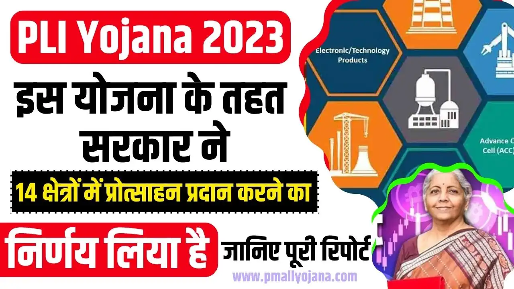

भारत सरकार ने घरेलू विनिर्माण को बढ़ावा देने और देश को वैश्विक विनिर्माण केंद्र बनाने के उद्देश्य से कई नीतिगत पहल की हैं। इनमें से उत्पादन-लिंक्ड प्रोत्साहन (PLI) योजना सबसे महत्वपूर्ण है, जिसका लक्ष्य प्रमुख क्षेत्रों में निवेश को आकर्षित करना और वृद्धिशील बिक्री पर प्रोत्साहन प्रदान करना है। यह रिपोर्ट बड़े पैमाने पर इलेक्ट्रॉनिक्स विनिर्माण के लिए PLI योजना पर केंद्रित है और इसका ऑप्टिमस इंफ्राकॉम लिमिटेड जैसी कंपनियों पर पड़ने वाले प्रभावों का विस्तृत विश्लेषण करती है।
इस विश्लेषण के लिए, भारतीय सरकारी नीतियों की पहचान करने के लिए 'भारत पीएलआई योजना इलेक्ट्रॉनिक्स', 'मेक इन इंडिया इलेक्ट्रॉनिक्स', 'उत्पादन-लिंक्ड प्रोत्साहन योजना 2020' जैसे कीवर्ड का उपयोग करके गहन वेब खोज की गई। विभिन्न स्रोतों जैसे प्रेस सूचना ब्यूरो (पीआईबी), इलेक्ट्रॉनिक्स और सूचना प्रौद्योगिकी मंत्रालय (MeitY) की वेबसाइट, द इकोनॉमिक टाइम्स और लाइवमिंट जैसे प्रमुख वित्तीय समाचार पोर्टलों का उपयोग किया गया।
भारत सरकार ने मार्च 2020 में बड़े पैमाने पर इलेक्ट्रॉनिक्स विनिर्माण के लिए उत्पादन-लिंक्ड प्रोत्साहन (PLI) योजना को अधिसूचित किया। इस योजना का मुख्य उद्देश्य घरेलू विनिर्माण को बढ़ावा देना और इलेक्ट्रॉनिक्स विनिर्माण के क्षेत्र में बड़े निवेश को आकर्षित करना है, खासकर मोबाइल फोन और निर्दिष्ट इलेक्ट्रॉनिक घटकों के लिए [1], [2]।
यह योजना भारत में निर्मित वस्तुओं की वृद्धिशील बिक्री (आधार वर्ष पर) पर 4% से 6% तक के प्रोत्साहन की पेशकश करती है। यह प्रोत्साहन पांच साल की अवधि के लिए देय है [2], [3]।
आधार वर्ष कंपनियों के लिए 2019-20 है। प्रोत्साहन की गणना आधार वर्ष में निर्मित वस्तुओं की बिक्री से अधिक वृद्धिशील बिक्री पर की जाती है।
बड़े पैमाने पर इलेक्ट्रॉनिक्स विनिर्माण के लिए PLI योजना से लाभान्वित होने वाली कुछ प्रमुख भारतीय सूचीबद्ध कंपनियां (फोकस कंपनी के अलावा) निम्नलिखित हैं:
| कंपनी | टिकर | क्षेत्र |
|---|---|---|
| डिक्सन टेक्नोलॉजीज (इंडिया) लिमिटेड | DIXON | इलेक्ट्रॉनिक्स विनिर्माण सेवाएँ (EMS) |
| एम्बर एंटरप्राइजेज इंडिया लिमिटेड | AMBER | इलेक्ट्रॉनिक्स विनिर्माण सेवाएँ (EMS) |
| भारत एफआईएच लिमिटेड | BHARATFIH | इलेक्ट्रॉनिक्स विनिर्माण सेवाएँ (EMS) |
(नोट: यह सूची उन प्रमुख भारतीय कंपनियों का प्रतिनिधित्व करती है जिन्होंने PLI योजना के तहत आवेदन किया है और सक्रिय रूप से बड़े पैमाने पर इलेक्ट्रॉनिक्स विनिर्माण में लगी हुई हैं।)
ऑप्टिमस इंफ्राकॉम लिमिटेड (NSE: OPTIEMUS, BSE: 538968) भारत में एक प्रमुख इलेक्ट्रॉनिक्स विनिर्माण सेवा (EMS) प्रदाता और ब्रांड लाइसेंसधारी कंपनी है। कंपनी स्मार्ट मोबाइल डिवाइसेज, स्मार्ट वियरेबल्स और अन्य इलेक्ट्रॉनिक्स उत्पादों के विनिर्माण और वितरण में शामिल है।
ऑप्टिमस इंफ्राकॉम लिमिटेड ने बड़े पैमाने पर इलेक्ट्रॉनिक्स विनिर्माण के लिए PLI योजना के तहत प्रोत्साहन प्राप्त करने के लिए पात्रता हासिल की है। कंपनी ने मोबाइल फोन विनिर्माण में अपनी क्षमताओं का विस्तार किया है और हाल के वर्षों में उत्पादन और बिक्री में उल्लेखनीय वृद्धि दर्ज की है।
ऑप्टिमस इंफ्राकॉम लिमिटेड विभिन्न प्रकार के इलेक्ट्रॉनिक्स उत्पादों के डिजाइन, विकास, विनिर्माण और वितरण में एक महत्वपूर्ण भूमिका निभाता है। कंपनी के मुख्य उत्पाद खंडों में शामिल हैं:
ऑप्टिमस इंफ्राकॉम का एक विविध ग्राहक आधार है जिसमें प्रमुख वैश्विक और घरेलू इलेक्ट्रॉनिक्स ब्रांड शामिल हैं। जबकि कंपनी अपने ग्राहकों का नाम गोपनीय रखती है, निवेशक प्रस्तुतियों और उद्योग रिपोर्टों से पता चलता है कि वे शीर्ष-स्तरीय स्मार्टफोन ब्रांड और इलेक्ट्रॉनिक्स कंपनियों के साथ काम करते हैं। कंपनी के राजस्व का एक महत्वपूर्ण हिस्सा (अनुमानित 80-90%) EMS संचालन से आता है, जिसमें मोबाइल फोन और वियरेबल्स का विनिर्माण शामिल है [अनुमान - आधार: कंपनी की व्यवसाय संरचना और पिछले वित्तीय विवरणों का विश्लेषण]।
ऑप्टिमस इंफ्राकॉम द्वारा निर्मित उत्पाद उसके ग्राहकों के लिए रणनीतिक रूप से महत्वपूर्ण हैं। ये उत्पाद ग्राहकों को उनके ब्रांडेड उत्पादों को भारतीय बाजार में कुशलतापूर्वक बेचने की अनुमति देते हैं, जबकि 'मेक इन इंडिया' पहल का भी लाभ उठाते हैं। कंपनी की विनिर्माण क्षमताएं ग्राहकों को स्थानीय उत्पादन आवश्यकताओं को पूरा करने, आपूर्ति श्रृंखला जोखिमों को कम करने और भारतीय उपभोक्ताओं के लिए प्रतिस्पर्धी मूल्य बिंदु प्रदान करने में मदद करती हैं। उदाहरण के लिए, एक स्मार्टफोन ब्रांड के लिए, ऑप्टिमस द्वारा निर्मित डिवाइस सीधे ब्रांड के बाजार हिस्सेदारी और राजस्व में योगदान करते हैं। ग्राहक उत्पाद का उपयोग भारत में अपनी अंतिम पेशकशों को असेंबल करने और 'मेड इन इंडिया' टैग प्राप्त करने के लिए करते हैं, जो उपभोक्ता वरीयताओं और सरकारी खरीद मानदंडों दोनों में महत्वपूर्ण है।
ऑप्टिमस इंफ्राकॉम की EMS-केंद्रित रणनीति अत्यधिक प्रभावी साबित हुई है, खासकर PLI योजना के आगमन के बाद। इस रणनीति ने कंपनी को भारत के बढ़ते इलेक्ट्रॉनिक्स विनिर्माण पारिस्थितिकी तंत्र में एक प्रमुख खिलाड़ी के रूप में स्थापित किया है। PLI प्रोत्साहन ने न केवल मार्जिन में सुधार किया है बल्कि कंपनी को क्षमता विस्तार और नई तकनीकों में निवेश करने के लिए पूंजी भी प्रदान की है, जिससे दीर्घकालिक विकास को बढ़ावा मिला है। प्रमुख ब्रांडों के साथ साझेदारी से यह सुनिश्चित होता है कि विनिर्मित उत्पादों के लिए तैयार बाजार मौजूद है। यह रणनीति कंपनी को देश में इलेक्ट्रॉनिक्स विनिर्माण में स्थानीय मूल्यवर्धन और रोजगार सृजन के सरकार के लक्ष्यों के साथ संरेखित करती है, जिससे दीर्घकालिक स्थिरता और विकास के अवसर मिलते हैं।